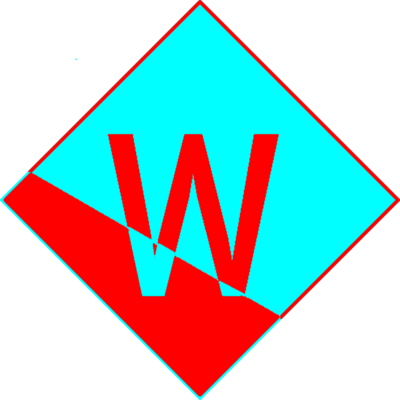
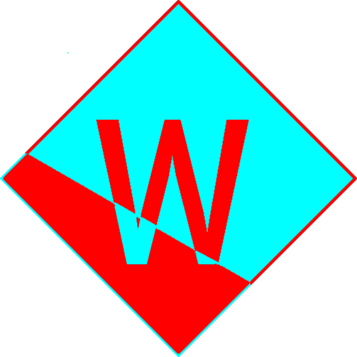

Notepad++
A pesar de ser bastante simple, cumple con su funcionalidad bastante bien.
Su única desventaja es que no es muy personalizable. Si ignoramos eso, es un muy buen editor para ser tan limitado
Veredicto Final:

(5.5/6)
Página de descarga

 
